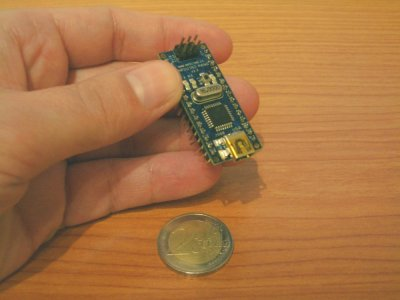
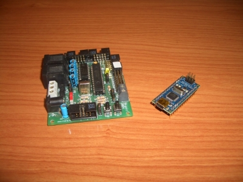

Esta semana he recibido mi nuevo Arduino Nano. Me lo he comprado para aprender sobre los microcontroladores AVR de Atmel. Llevo muchos años trabajando con los Pics de Microchip. Y la verdad, no he terminado de cogerlos el gustillo. Los PICS no han logrado ilusionarme.
Ahora quiero probar los AVR. No lo hago por una cuestión técnica. Al final, con cualquier micro puedes hacer cualquier aplicación. La diferencia la encuentro en las comunidades de usuarios que utilizan los micros. Mi forma de ser y de pensar encaja mucho más con la filosofía de la comunidad de AVRs que con la de los PICs. Y también es cierto, que el que los AVR se puedan programar usando el copilador GCC de GNU es una gran motivación. Recientes sucesos en mi vida me han hecho reflexionar y decidirme a empezar desde cero con estos micros.
Y qué mejor manera de empezar que comprando un Arduino Nano, que es Hardware libre. Es la primera vez que compro una placa libre. Hasta ahora yo sólo usaba las que nos construíamos nosotros, que también son libres. El saber que compras una placa y que tienes absolutamente toda la información disponible me da una gran sensación de libertad y me ilusiona.

La tarjeta Skypic la voy a seguir usando. He dedicado muchos años de mi vida a su desarrollo y a la creación de documentación y software. Pero ahora la compaginaré con el AVR. No descarto tampoco hacer una entrenadora nueva que sea compatible con la Skypic pero que use el AVR. Si la desarrollo la llamaré Tarjeta Skywars. Pero de momento tengo que aprender a programar los AVR.
¿Cuál es el problema que le ves al uso del PIC? o a la comunidad de usuarios, ¿es falta de una base de aplicaciones? ¿hw libre?…
S2
Ranganok Schahzaman
PD: Lo digo con la intención de mejorarlo no de hecharlo en cara… (no quiero que se me mal interprete)
Hola Juan, veo que al final has visto la luz 😉
Mira que te lo dijimos Alicia y yo hace diez años (madre mía como pasa el tiempo!). Nosotros utilizamos en el PFC de automatización de una granja el AT90S4414 y el AT90S8515 (ya descatalogados y sustituidos por el ATMega). Yo creo que nuestro tutor (Benito Artaloytia) y nosotros fuimos los primeros en utilizarlos en España. Que tiempos, el precio del único compilador de C que existía en ese momento era el de IAR y nos pedÃan un millón y medio de pesetas!! Y claro, no te digo a cuanto nos salían los micros, que por cierto, teníamos que comprar en series de 50 unidades como mínimo.
La verdad que los AVR han arrasado y, como dices, la comunidad es muy activa. Supongo que no será necesario que te recomiende esta página, pero por si acaso 😉
AVR Freaks: http://www.avrfreaks.net
Ya verás como vas a disfrutar con tu Arduino. Por cierto, yo estoy trabajando en el curro con motas zigbee squidbee de libelium que se basan en una placa Arduino.
Saludos,
Isaac
Yo no tengo ni idea de electrónica, ni de programación de pics. Pero si que llevo tiempo con ganas de aprender sobre esto.
Probablemente haga como tu, y para navidades me autoregalaré un Arduino para empezar a jugar.
Mi duda es la siguiente: ¿porqué el nano y no el Diecimila? ¿cual es la principal diferencia? He visto que en la tienda que enlazas hay unos cuantos “shields” preparados para acoplarse a los Diecimila… Así que estoy dudando, ya que no se cual de los dos pillarme.
Que sepas que si me lo compro será culpa tuya 😉
Hola Ranganok,
No hay ningún problema con los PICs. Los he usado para mi tesis y los voy a seguir usando. Llevo 7 años trabajando con ellos. Sin embargo no termino de encajar entre los usuarios de los PICs. La gran mayoría de la gente que usa PICs sólo usan Windows y piensan que todos los demás también lo usamos. La comunidad de gente de AVR es más heterogenea. Los hay que usan Windows, otros Linux, otros Mac, otros FreeBSD, etc… Es un feeling más “multiplataforma”. También, por lo general, la gente que usa PICs es más reacia a compartir sus diseños y software. Y los que lo hacen, la gran mayoría sólo lo tiene disponible para compiladores propietarios que sólo funcionan en Windows. No es un inconveniente. Si usas Windows está fenomenal. El problema es con los que no lo usamos.
Lo importante es que cada uno elija la tecnología con la que se sienta más cómodo. Realmente no hay una que sea mejor que otra, sino que hay una que nos gusta más que otra. Yo he probado los PICs, y no encajo. Ahora voy a probar los AVR.
Hola Isaac!!
Gracias por el enlace ;-). Como estoy empezando con los AVRs, todavía no conozco las principales webs.
De momento no sé que tal me irá con los AVR, no he tenido tiempo de hacer ninguna aplicación. Sin embargo, es cierto que estoy muy ilusionado. He recuperado una ilusión que los PICs no me hacían sentir. El sentimiento que tengo ahora es de que he llegado un poco tarde, pero bueno, más vale tarde que nunca.
Hola Xabi,
En realidad me daba igual qué arduino comprar. Yo lo único que necesitaba era una entrenadora para empezar a trabajar. Luego me haré la mía propia. La ventaja que le veo al Arduino Nano es que es muy pequeño y lo puedo meter facilmente en mis robots modulares.
Creo que el problema reside principalmente en las herramientas de desarrollo.
En hardware no existe ninguna herramienta seria para el desarrollo en otros sistemas que no sea windows (ni Eagle que es propietario ni KiCAD que es libre se acercan mínimamente a PROTEL, PCAD o ALTIUM), sé que pueden hacer cosas de aficionado, pero los que trabajamos en esto nos faltan muchas de las facilidades que nos proporcionan.
En software nadie se ha molestado (hasta hace poco) que se pudiera trabajar con SDCC o con GCC (ahora han salido algunos projectos como: http://pjmicrocontroladores.wordpress.com/ que van avanzando en este sentido). De todas formas la comodidad que se tiene en windows con el IDE de microchip (gratuito) no se tiene en ningún otro lado.
Yo soy usuario de linux y la verdad es que me fastidia mucho tener que resetear mi máquina para poder realizar una placa o un programa para PIC, pero por ahora no hay nada en linux que me convenza.
A pesar de esto no creo que la gente que usa PIC sea menos propensa a compartir el código o los diseños, simplemente están más desorganizados, AVR tiene AVR Freaks que es el referente en estos micros, que está mucho mejor organizado que su “homólogo” PIClist ( http://www.piclist.com/ ) que ya casi ni funciona.
Sinceramente pienso que los que trabajamos o frikeamos con PIC deberíamos organizarnos entorno a una plataforma (como la gente ha hecho con ARDUINO) y crear un IDE en condiciones para trabajar en PIC (o un plugin que se pueda usar con un IDE ya creado).
S2
Ranganok Schahzaman
Bienvenido a la comunidad AVR, ya verás como te vas a olvidar de los PIC antes de lo que te crees. 😉
Hola, he trabajado “no mucho ” con los PIC y ultimamente me he visto atraido por los AVR ya que como menciona obijuan con la comunidad que desarrolla con esta tecnologia me siento mucho mejor “Aunque apenas estoy empezando” con los AVR,
psd, obijuan para cuendo tienes una entrenadora que sea facil de contruir y obviamente economica
Hola jEdwin,
No me he puesto plazos. De momento tengo que aprender a manejar los AVR. Si quieres empezar lo mejor es que uses un Arduino. Todos los esquemas están publicados por lo que es muy fácil ponerlo en marcha.